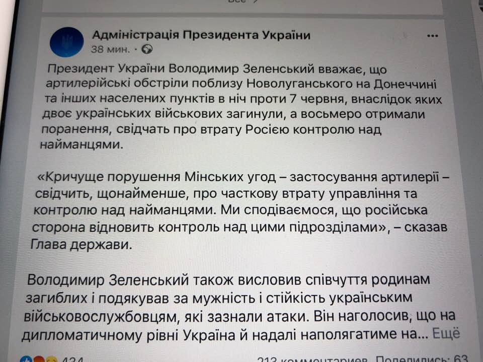
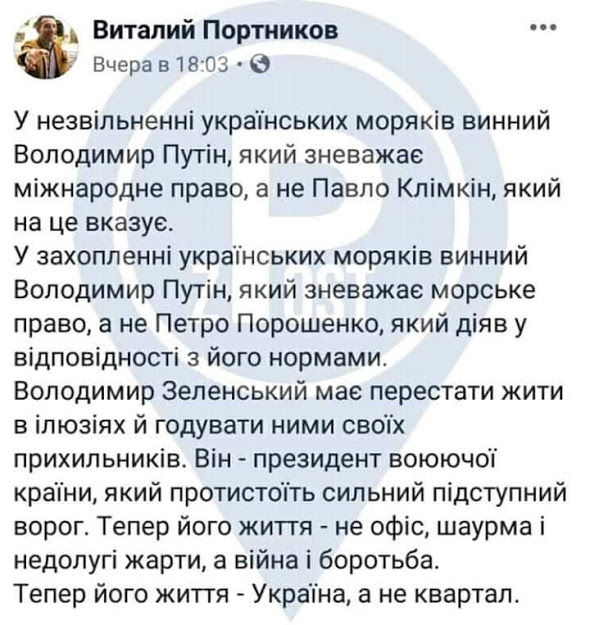

03.06.2019
Зеленський дав Баканову два тижні, щоб розібратися з контрабандою »»»
UPD: Це була показуха: Гончарук визнав, що контрабанда на кордоні не припиняється »»»
Отже, Баканов завдання презЕдента провалив! Тепер Гончаруку залишилось сказати "Контрабанда, стій! Раз, два!"
04.06.2019
В ПАРЄ погодилися зняти санкції з РФ »»»
Перша прес-конференція Зеленського в Брюсселі »»»
Виступ на рівні ПТУшника!
За доручення Зеленського, його другу та бізнес-партнеру Івану Баканову, якого Зеленський поставив керувати СБУ, було незаконно надане військове звання - лейтенант »»»
UPD1: Новоспечений лейтенант СБУ купив диплом? »»»
UPD2: СБУ офіційно відмовилась показувати декларацію Баканова »»»
05.06.2019
"Банальний плагіат": Зеленський поцупив цілий абзац з виступу Порошенка – Святослав Цеголко »»»
UPD: У Зеленського звинувачують у ситуації з плагіатом ... команду Порошенка »»»
Шо? Знову невістка винувата?
На переговорах в Мінську Кучма від імені Зеленського запропонував зняти блокаду з Донбасу »»»
А якже "бізнес на крові"?
Кучма предлагает прописать в Минских договоренностях запрет стрелять в ответ на Донбассе »»»
Фейсбук-сторінку АП злито зі сторінкою "За Зеленського" начебто щоб збаласувати настрої в коментарях »»»
А може для того, щоб симулювати тотальну підтримку населенням дій преtheдента?
06.06.2019
КСУ обмежив повноваження НАБУ на вимогу Коломойського »»»
07.06.2019
Зеленський у ФБ закликає росію контролювати своїх найманців

Попередній Президент закликав рф своїх найманців забрати ЗОВСІМ! Цей кричить "Путєн, памагі"?
Пресс секретарь Зеленского, обвинила ЗСУ в стрельбе по школам, больницам и детским садам »»»
UPD1: ГПУ: Юлия Мендель отказалась давать показания об «обстрелах мирных жителей ВСУ» »»»
UPD2: В ОПУ теж з цього приводу "відморозились" »»»
Через заборону на відкриття вогню в зоні ООС загинули українські воїни »»»
Відсьогодні кожен зе-виборець – убивця!
08.06.2019
Зеленський помилував державного зрадника »»»
Выборы в Раду от «Слуги народа»: от кандидатов требуют от $300 тыс. до $2 млн. »»»
09.06.2019
Зеленський провів закриту зустріч з журналістами »»»
"При Януковиче было лучше!" В партию Зеленского попал ярый противник Майдана »»»
За Конституцією президент країни - безпартійний. Але що там "гаранту" та Конституція? Зеленський не тільки бере участь у з'їзді своєї партії, а й голосує на ньому »»»
10.06.2019
Юлія Мендель не розуміє, чому Луценко не "мочить" Бойка і Медведчука за поїздки в Москву »»»
UPD: Відповідь від ГПУ "Прессекретар президента мала би знати, що кримінальні провадження за статтями про державну зраду відносяться до підслідності СБУ, керівник якої знаходиться в прямому підпорядкуванні президента України" »»»
11.06.2019
Плюс зачистка інтернету від компромату: Зеленський призначив на ДУС скандального Борзова з КВН »»»
Очільник Служби зовнішньої розвідки України Владислав Бухарєв нагороджений медаллю ФСБ »»»

12.06.2019
«Он просто пошутил»: у Зеленского сделали признание о снижении тарифов »»»
Держава у смартфоні: Зеленський зібрав на Банковій експертів із е-послуг »»»
От тільки такий проект давно уже реалізується командою "попередників" »»»
В онлайн переведено уже 128 держпослуг. Оформлення ФОП і ТОВ, допомоги при народженні дитини, субсидії, будівельні послуги та багато іншого. Єдина точка входу – “Урядовий портал” »»»
Дружина в.о. глави СБУ досі є громадянкою росії! »»»
"До $6 млн": Разумков фактично підтвердив продаж місць у "Слузі народу" »»»
А як же "чиста політика"? Здається, зе-виборців знову розвели як лохів!
13.06.2019
Назву, сюжет і прізвище свого головного кіноперсонажа Зеленський і його сценаристи вкрали у вінницького письменника Василя Рудика
...а слоган "Зробимо це разом" - у фейкової естонської партії "Єдина Естонія" »»»
Коломойський через Баришівський суд намагається прибрати лоукостер SkyUp з українського ринку »»»
14.06.2019
Зеленський призначив новим керівником Держприкордонслужби полковника Сергія Дейнеко, який підозрюється у співпраці з ЛНР та контрабанді »»»
Планы Хомчака по реорганизации ЗСУ — будем кормить чужую армию »»»
Верховний суд зобов’язав ПриватБанк виплатити 25 млн.грн Коломойському »»»
15.06.2019
Зеленський у Маріуполі:
16.06.2019
Почему он постоянно врет? Как Зеленский пиарился на машинах "скорой помощи", к которым не имеет никакого отношения »»»
17.06.2019
По списку “Слуги народа” в Верховную Раду идет гражданин РФ Соколов »»»
Минуло "два тижні" для СБУ, які дав Зеленський Баканову щоб "розібратися з контрабандою". Контрабанда як була так і залишилася.
Зеленский назвал украинских женщин туристическим брендом »»»
19.06.2019
Міністерство оборони спростувало СВОЄ Ж повідомлення про ухилення Зеленського від мобілізації в 2014-2015 роках
20.06.2019
Слуга народу повернув спецномери та завивання сирен VIP кортежів для себе та свого оточення »»»
Зеленський перейменував Адміністрацію на Офіс Президента »»»
Перейменування АП в ОПУ надихає! Тепер усім одразу видно, куди йдемо!
UPD: Перейменування АП в ОПУ є махінацією Зеленського, що дозволяє Богдану обійти закон про люстрацію »»»
Зеленський заявив що Ахметов, Пінчук і Коломойський фінансуватимуть відновлення Донбасу, поділивши між ними сфери відповідальності за певні програми »»»
Так нахабно й відкрито ділити сфери впливу між олігархами ще ніхто не наважувався!
21.06.2019
До мільярда в рік: юрист розкрив "помилку" скасованого указу Зеленського »»»
Голова Ради суддів України звернувся до ГПУ та ДБР через тиск на судову владу з боку АП Зеленського »»»
Міноборони скорочує понад 1000 військових лікарів і медсестер »»»
А от апарат президента навпаки - збільшується! Замість 200 в АП Порошенка з з/п в 30 тис. грн. буде 650 в "Офісі"" Зе з з/п в 120 тис. Указ про з/п вже підписаний
Зеленский отказался от громкого обещания: налога на выведенный капитал не будет »»»
22.06.2019
Путин оценил заявление Кучмы: Пинчуку разрешили завозить трубы в РФ »»»
Президент Зеленський не знає, коли почалась Друга світова війна »»»
23.06.2019
У КСУ підтвердили, що коаліція складалась з 239 депутатів при 226 необхідних, - Княжицький »»»
Суд дозволив депутату-втікачу Онищенку балотуватися в Раду »»»
UPD: Встановлено що він НЕ втік з України, а знаходився за кордоном "в статусі вершника" »»»
На яких лохів ця брехня розрахована? Вже й не намагаються вигадати щось, хоча б більш-менш правдоподібне! Відверте знущання з охлосу, який усе це "хаває"!
Українці віддадуть Коломойському 2,7 млрд, щоб «закрити дірку» в аеропорту Дніпра »»»
Офіси "Слуги народу" і ригівської "За життя" в Миколаєві зареєстровані за однією і тією ж адресою »»»
Соупадєніє???
24.06.2019
Зеленського не запросили на G20 у Японії »»»
Агітаційний тур "Слуги народа" зовсім "випадково" співпав з гастрольним туром "95 кварталу"
Та ви що! Це ж зовсім не підкуп виборців! Та нє!
Організатор людей на антимайдані йде по мажоритарці від "Слуги народу" »»»
25.06.2019
Перший результат зовнішньої політики Зеленського - російським вбивцям повернули право голосу у ПАРЄ »»»
UPD1: Ми склали зброю, тож Європа вирішила миритись з РФ – Портников про повернення Росії в ПАРЄ »»»
UPD2: “Ми залишились сам на сам..” – Команда Зеленського не підтримала українську делегацію в ПАРЄ перед голосуванням щодо Росії »»»
UPD3: Зеленський реєстрував торгові марки в той час, коли Україна зазнала поразки в ПАРЄ »»»
UPD4: Зеленський "розчарований" рішенням ПАСЄ »»»
Ну якщо нічого не робити, то чому хтось повинен щось робити за тебе?
«Наші гроші»: глава АП Андрій Богдан причетний до афер на сотні мільйонів »»»
З 25 жовтня вводиться в обіг нова купюра номіналом в 1000 грн.
Скінчилась "епоха бідності" чи розпочалася інфляція?
Проспектам Бандери і Шухевича повернуто старі назви »»»
Европейцы Зеленского не воспринимают всерьез, после встречи с Трампом ситуация может ухудшится »»»
Суд скасував введення обмежень щільності та висотності забудови в містах »»»
Новий співробітник АП підірвав мережу безграмотністю »»»
26.06.2019
Зеленський звільнив начальника департаменту СБУ, який заборонив в’їзд російському політтехнологу, близькому соратнику Віктора Медведчука і колишньому керівнику так званої «фабрики темників» Ігорю Шувалову »»»
Вперше з 2015 року Україна знову втрачає свої території. Українські війска у Станиці Луганській почали відведення сил »»»
UPD: Почему Зеленский отвел войска в Станице-Луганской »»»
«Улицы наших городов называют именами фашистских преступников». Канал «Інтер» виграв суд у Нацради »»»
ДБР провело масові обшуки у чиновників Міноборони »»»
UPD1: У Юрія Бірюкова, радника Президента П.Порошенка ДБР провело обшук »»»
UPD2: Забезпечення армії заблоковане через діяльність ДБР »»»
UPD3: Портнов звявив, що обшуки у Бірюкова це його "привіт Порошенку" »»»
UPD4: ДБР оприлюднило записи розмов чиновників Міноборони про постачання бракованих бронежилетів »»»
UPD5: ДБР сфальсифікувала розмову відповідальних осіб Міноборони, яка нібито доводила факт придбання за завищеною ціною неякiсних бронежилетів. Мета – дискредитація міністерства перед достроковими виборами в парламент »»»
UPD6: Главу ДБР Романа Трубу викрили у БРЕХНІ щодо закупівлі неякісних жилетів для ЗСУ »»»
UPD7: Офіцер ЗСУ виклав відео, в якому розповідають про фабрикування справи бронежилетів по команді, про обшуки та про тих, хто дає команду »»»
UPD8: Роман Труба заявив на брифінгу 17.07.2019 р. про те, що поки не підозрює жодного з посадовців МОУ »»»
Роман Труба є однокласником голови Офісу президента Андрія Богдана
Екс-голову київського СБУ Олександра Щеголєва відпустили із СІЗО під домашній арешт »»»
Щеголєв проходить як особа, яка віддала наказ почати спецоперацію "Бумеранг" – так звані антитерористичні заходи 18 лютого 2014 року. Він же віддав наказ штурмувати Будинок профспілок.
27.06.2019
Зеленський влаштував істерику з приводу відповіді МЗС на ноту РФ щодо звільнення українських моряків та звинуватив МЗС у тому, що вони професійно захищають інтереси держави »»»
Пояснення Глави МЗС Павла Клімкіна »»»
Коментар спеціального представника Держдепартаменту США щодо України Курта Волкера »»»
UPD: Зеленський визнав, що так "керує" країною, що не знає, що в ній робиться »»»
UPD: Зеленський вимагає від прем'єр-міністра В.Гройсмана покарати П.Клімкіна »»»

Що могло б статися, якби Клімкін не втрутився в підкилимні ігри зеленського з путіним? А ланцюжок наслідків дуже простий і досить сумний! Якщо Україна погоджується на умови кремля і підтврджує свою готовність засудити українських моряків за російськими законами, значить: 1) Україна визнає над собою верховенство російського права; 2) Україна визнає наших моряків ВИННИМИ. З цього слідує, що українські моряки таки порушили територіальні води росії, а значить Керченська протока і води навколо Криму таки належать росії. Україна таким чином САМА визнає, що Крим - це росія! Але це ще не все! Якщо Крим - це росія, тоді т.зв. "референдум" про перехід Криму під юрисдикцію росії - законний, тому з росії потрібно знімати санкції! Якщо кримський "референдум" законний, тоді донецький "референдум", який здійснювався за тим же сценарієм - теж законний, а тому Донбабве і Луганда - законно утворені народні республіки, які Україна САМА визнає і це, знов-таки, значить, що з росії слід знімати усі санкції! Але і це ще не все! Якщо т.зв. ДНР і ЛНР - легітимні, значить їх "автори" ніякі не терористи, а отже на території України, дійсно, точиться громадянська війна і ЗСУ, дійсно, стріляють в мирних громадян, які на "законних", визнаних самою Україною підставах відділилися від України і утворили свої держави. Захисники України миттєво перетворюються на військових злочинців, за якими плаче Гаага, а санкції за вчинені злочини проти людяності світовій спільноті слід накладати уже на УКРАЇНУ! Все! Шах і мат! Слава Богу, мудрий Клімкін опинився в потрібний час на потрібному місці!
Одесит, якому Зеленський довірив область, заробив мільйони на торгівлі металобрухтом з невизнаним Придністров’ям »»»
UPD: Зеленський відклав призначення Андрейчикова главою Одеської ОДА - буде проведено конкурс »»»
ЗСУ готуються до виведення важких озброєнь з-під Маріуполя »»»
Звільнено найефективнішого "губернатора" України - очільника Дніпропетровської ОДА Валентина Резніченка »»»
Зеленський, своїм Указом №468/2019, присвоїв звання Герой України ліквідаторам аваріїї на ЧАЕС Ананенку, Беспалову, Баранову (посмертно).
Це є порушенням статті 7 Статуту, затвержденного Указом Президента №1114/2002, а саме: "Звання Герой України не присвоюється за заслуги, які мали місце в минулому і не пов'язані зі становленням та розвитком незалежної України." »»»
28.06.2019
Зеленський ПРОДАЄ квитки на свою зустріч з діаспорою в Канаді »»»
Зеленский оконфузился, назвав украинских детей "будущими гражданами" »»»
Замглавы ГУ "К" СБУ назначен генерал-майор Калюжняк, попадающий под действие закона о люстрации »»»
30.06.2019
У народні депутати від партії «Слуга народу» балотується Олександр Куницький, що має подвійне громадянство - України та Ізраїлю »»»
Слуга якого народу?
Трамп і Путін обговорили Україну на саміті G20. Вперше БЕЗ УКРАЇНИ »»»
За те, щоб Вова вчився керувати державою, Україна заплатила в червні життям 8 воїнів, 87 пораненими, поверненням росії в ПАРЄ, втечею МВФ, скороченням удвічі коштів на казначейських рахунках, поверненням бандюків, відвертих українофобів і ригів, тощо. Чи не завелика ціна навчання?